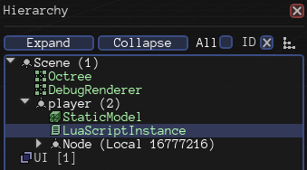

I’ve added a LuaScriptInstance to a node in my scene in the editor:

The Lua script contains the following code:
[code]CharacterController = ScriptObject()
print(“Hello!”)
function CharacterController:Update(timeStep)
print(“Update”)
end[/code]
Next, in my App, I make sure to create the LuaScript subsystem:
void App::Setup()
{
context_->RegisterSubsystem(new LuaScript(context_));
}
I load the scene with the following code:
[code]void App::CreateScene()
{
ResourceCache* cache = GetSubsystem();
scene_ = new Scene(context_);
XMLFile* sceneXML = cache->GetResource<XMLFile>("Scenes/TestScene.xml");
scene_->LoadXML(sceneXML->GetRoot());
// set up camera
cameraNode_ = scene_->CreateChild("Camera");
auto camera = cameraNode_->CreateComponent<Camera>();
camera->SetFarClip(300.0f);
cameraNode_->SetPosition(Vector3(0.0f, 5.0f, -20.0f));
}[/code]
When I compile and run my Application, I see the output “Hello!” but I never see “Update”.
[Sun Sep 6 14:48:15 2015] INFO: Opened log file Urho3D.log
[Sun Sep 6 14:48:15 2015] INFO: Created 1 worker thread
[Sun Sep 6 14:48:15 2015] INFO: Added resource path /home/thecomet/documents/programming/cpp/primal-equestria/bin/Data/
[Sun Sep 6 14:48:15 2015] INFO: Added resource path /home/thecomet/documents/programming/cpp/primal-equestria/bin/CoreData/
[Sun Sep 6 14:48:15 2015] INFO: Set screen mode 1024x768 windowed
[Sun Sep 6 14:48:15 2015] INFO: Initialized input
[Sun Sep 6 14:48:15 2015] INFO: Initialized user interface
[Sun Sep 6 14:48:15 2015] INFO: Initialized renderer
[Sun Sep 6 14:48:15 2015] INFO: Set audio mode 44100 Hz stereo interpolated
[Sun Sep 6 14:48:15 2015] INFO: Initialized engine
[Sun Sep 6 14:48:15 2015] INFO: Loaded Lua script Scripts/CharacterController.lua
Hello!
[Sun Sep 6 14:48:15 2015] INFO: Executed Lua script Scripts/CharacterController.lua
*** Exited normally ***
What’s going on? Why isn’t Update() being called? I tried some other built in methods like Start() or FixedUpdate() but they’re also never called…